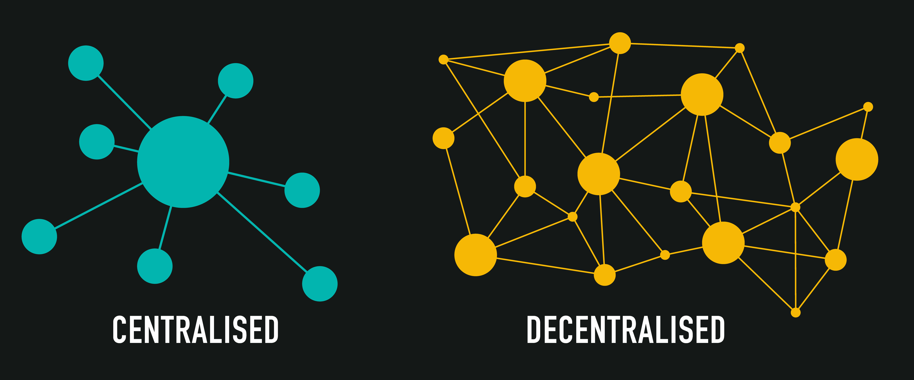

ВВЕДЕНИЕ
Современное состояние развития инфокоммуникационных технологий (ИКТ) и интернет-технологий (ИТ) характеризуется стремительным развитием и интеграцией цифровых решений во все аспекты жизни общества. В последние годы наблюдается значительный рост внедрения технологий в экономику, государственное управление, образование и другие сферы, что способствует повышению эффективности и скорости выполнения различных процессов. Цифровая трансформация становится ключевым фактором конкурентоспособности стран и компаний. При этом усиливается конкуренция на международном уровне, где важную роль играет способность компаний и государств адаптироваться к новым условиям и использовать цифровые технологии для оптимизации процессов. Всё большее значение приобретает внедрение искусственного интеллекта и автоматизации.
Понятие «Цифровая экономика» связано с использованием информационных и интернет-технологий для трансформации всех значимых и критически важных процессов. Основными трендами цифровизации являются автоматизация, анализ больших данных и использование облачных решений. Эти технологии позволяют значительно повысить производительность, улучшить коммуникацию и предоставить новые возможности для бизнеса и общества. Современные решения в области облачных технологий обеспечивают быструю и гибкую интеграцию ресурсов, что способствует сокращению затрат и повышению эффективности. Анализ больших данных, в свою очередь, позволяет получать глубокие инсайты для принятия управленческих решений, что способствует повышению конкурентоспособности бизнеса. Также следует отметить роль искусственного интеллекта, который позволяет оптимизировать процессы и автоматизировать принятие решений в режиме реального времени.
«Индустрия 4.0» представляет собой четвертую промышленную революцию, основанную на внедрении киберфизических систем, интернета вещей (IoT) и анализа данных в производственные процессы. В рамках данной концепции важную роль играют такие ИТ, как искусственный интеллект, машинное обучение и роботизация. Это способствует повышению эффективности производства и созданию новых бизнес-моделей. Важным элементом «Индустрии 4.0» является интеграция различных систем и устройств, что позволяет достичь высокой степени автоматизации и гибкости. Машинное обучение и искусственный интеллект играют ключевую роль в оптимизации процессов и предсказании потенциальных проблем, что приводит к снижению затрат и повышению надежности производства. Применение этих технологий также позволяет повысить уровень персонализации услуг и продукции.
Концепция «Web 3.0» обозначает новое поколение интернета, которое направлено на децентрализацию, обеспечение конфиденциальности и улучшение взаимодействия между пользователями. Основные технологические тренды включают блокчейн, децентрализованные приложения (dApps), искусственный интеллект и децентрализацию хранения данных. Децентрализация позволяет устранить зависимость от централизованных платформ и сервисов, что делает интернет более открытым и доступным. Это открывает новые возможности для создания безопасных и прозрачных экосистем, в которых пользователи обладают большим контролем над своими данными.
КЛЮЧЕВЫЕ НАПРАВЛЕНИЯ РАЗВИТИЯ ИТ В КОНЦЕПЦИИ «WEB 3.0»
Web 3.0 представляет собой эволюционный шаг в развитии интернета, направленный на повышение прозрачности, децентрализации и защиты данных. Основные технологические тренды включают децентрализованные сети, криптографию, децентрализацию хранения данных, а также использование умных контрактов. Одним из ключевых направлений развития является децентрализация хранения данных, что позволяет устранить зависимость от централизованных серверов и повысить безопасность и устойчивость данных. Децентрализованные сети, такие как IPFS (InterPlanetary File System), позволяют хранить данные на множестве узлов, что обеспечивает высокую степень надежности и защищенности информации. Эти сети также способствуют снижению затрат на инфраструктуру и позволяют более эффективно распределять ресурсы.
Децентрализация хранения данных, основывающаяся на блокчейн-технологиях, способствует созданию более защищенных и распределенных систем хранения информации. Это обеспечивает устойчивость к атакам и повышает надежность инфраструктуры, что особенно важно в современных условиях, когда объем данных постоянно растет, и требования к их безопасности становятся все более строгими. Важно отметить, что блокчейн позволяет реализовать принципы доверенного взаимодействия между участниками сети, что делает невозможным несанкционированное изменение данных. В результате децентрализованные системы хранения находят применение в таких областях, как управление личными данными, регистрация прав собственности и финансовые транзакции. Также можно отметить, что блокчейн-технологии используются для обеспечения прозрачности и подотчетности в цепях поставок.
Использование умных контрактов также является важным направлением развития Web 3.0. Умные контракты, работающие на основе блокчейна, позволяют автоматизировать выполнение условий договоров без необходимости участия третьих сторон. Это способствует повышению эффективности и снижению издержек, связанных с юридическим сопровождением сделок. Умные контракты находят применение в различных сферах, включая финансовые технологии (финтех), логистику и управление цепочками поставок. Внедрение умных контрактов позволяет сократить временные затраты на выполнение транзакций, а также обеспечить прозрачность и надежность процессов. В сфере недвижимости, например, умные контракты позволяют автоматизировать сделки купли-продажи и аренды.
ОСНОВНЫЕ ОБЛАСТИ ПРИМЕНЕНИЯ ИТ В КОНЦЕПЦИИ «WEB 3.0»

Одной из ключевых областей применения технологий Web 3.0 является удаленный формат работы. Эта область включает в себя использование 3D-рабочих мест, аватаров и виртуальных встреч, что позволяет создать интерактивное и эффективное рабочее пространство для сотрудников, работающих удаленно. Текущее состояние развития данной отрасли показывает, что использование таких технологий может значительно повысить вовлеченность сотрудников, улучшить их взаимодействие и сделать удаленную работу более продуктивной. Виртуальные офисы и 3D-рабочие пространства позволяют сотрудникам чувствовать себя частью команды, несмотря на физическое расстояние, что особенно важно в условиях глобализации и распространения удаленной работы. Применение таких технологий также способствует снижению затрат на аренду офисных помещений и транспортные расходы, что делает бизнес более устойчивым и экономически выгодным.
ИТ, оказывающие наибольшее влияние на развитие удаленной работы, включают в себя виртуальную и дополненную реальность, технологии децентрализованной идентификации и блокчейн. Виртуальная реальность позволяет создавать интерактивные рабочие пространства, где сотрудники могут взаимодействовать с окружающей средой и друг с другом. Это способствует созданию атмосферы присутствия и улучшению коммуникации между членами команды, что положительно сказывается на результатах работы. Децентрализованная идентификация, в свою очередь, обеспечивает безопасный доступ к корпоративным ресурсам, что делает удаленную работу более защищенной. Благодаря использованию блокчейн-технологий можно гарантировать безопасность данных и прозрачность процессов аутентификации, что особенно важно при работе с конфиденциальной информацией. Это также позволяет избежать проблем с утечками данных и обеспечивает защиту персональных данных сотрудников.
Удаленный формат работы также выигрывает от использования децентрализованных платформ для совместной работы. Такие платформы позволяют сотрудникам обмениваться файлами, проводить видеоконференции и совместно редактировать документы, обеспечивая при этом высокий уровень безопасности. Это особенно актуально для международных компаний, где команды состоят из людей, работающих в разных странах и часовых поясах. Использование децентрализованных технологий помогает избежать проблем с хранением данных и обеспечивает контроль над доступом к корпоративной информации.
ВЫВОДЫ
Современные интернет-технологии продолжают активно развиваться, предоставляя новые возможности для бизнеса и общества. Web 3.0 и концепция децентрализации играют ключевую роль в развитии современных ИТ, обеспечивая повышение безопасности, приватности и прозрачности. В области удаленной работы наибольшую значимость имеют технологии виртуальной и дополненной реальности, а также децентрализованная идентификация, которые способствуют созданию более интерактивной и защищенной рабочей среды. Именно эти технологии будут определять будущее удаленной работы и способствовать развитию концепции «Индустрия 4.0». Важно подчеркнуть, что внедрение децентрализованных технологий позволяет повысить степень доверия между участниками рынка и создать устойчивую инфраструктуру для цифровой экономики будущего. Также стоит сказать, что использование таких технологий способствует улучшению качества жизни, обеспечивая доступ к цифровым услугам независимо от местоположения и социального статуса пользователя.
В заключение отмечу, что современные интернет-технологии не только изменяют подход к организации рабочих процессов, но и формируют новую культуру взаимодействия в обществе. Концепция Web 3.0 с её ориентацией на децентрализацию, конфиденциальность и прозрачность открывает перед нами новые горизонты, делая интернет более безопасным и справедливым пространством. В условиях глобальных изменений и вызовов, таких как пандемии и экономические кризисы, использование данных технологий позволяет обеспечивать устойчивость и гибкость бизнеса, а также адаптироваться к новым условиям. Технологии, такие как блокчейн, виртуальная реальность и децентрализованные платформы, будут играть важную роль в будущем развитии ИТ и цифровой экономики, создавая новые возможности для сотрудничества и инноваций.
СПИСОК ЛИТЕРАТУРЫ
Иванов А.А. Современные информационные технологии в экономике. – М.: Наука, 2022.
Петров Б.Б. Цифровизация процессов и роль ИТ. // Журнал информационных технологий. – 2023. – № 3. – С. 45-52.
Сидоров В.В. Индустрия 4.0: перспективы и вызовы. – СПб.: Технопарк, 2021.
Смирнова Е.С. Web 3.0 и будущее интернета. – М.: ИнфоТех, 2023.
Johnson M. The Future of Decentralized Web. – New York: TechPress, 2022.
Brown J. Data Decentralization: Blockchain and Beyond. // Journal of Internet Technologies. – 2023. – № 5. – P. 23-30.
Кузнецов Д.Д. Удаленная работа и виртуальные технологии. – М.: Виртуальные системы, 2023.
Smith R. Virtual Workspaces in the Era of Web 3.0. // Tech Journal. – 2023. – № 8. – P. 12-19.
Андреев И.И. Будущее удаленной работы: технологии и решения. – М.: ТехноМир, 2024.